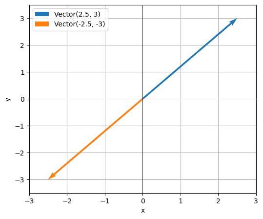
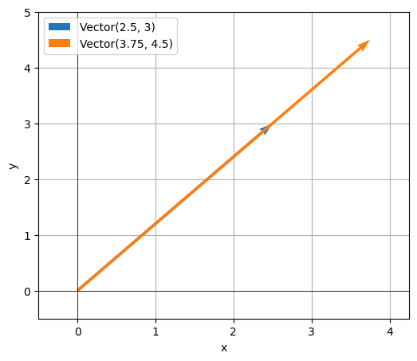
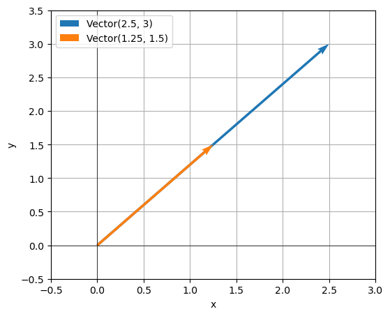
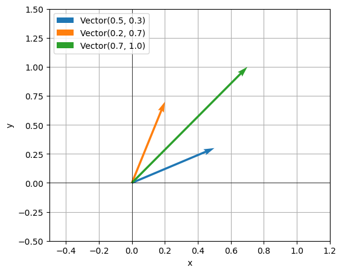
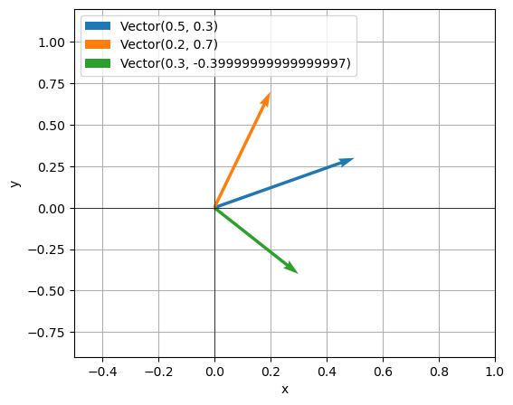

El término polimorfismo tiene origen en las palabras poly (muchos) y morfo (formas). Aplicado a la programación hace referencia a que los objetos pueden tomra diferentes formas.
Pero, ¿qué significa que los objetos pueden tomar diferentes formas? En el contexto de programación orientada a objetos significa que los objetos pueden responder a una misma operación de distintas maneras.
Tomemos, por ejemplo, la suma de dos variables:
a + b
Si a y b son de tipo int, la operación está definida y devuelve otro int. Si son de tipo list, la operación también está definida y devuelve un nuevo objeto list. Así, diferentes tipos de datos, responden al mismo mensaje (la suma) de maneras distintas.
Ejemplos
A lo largo de esta sección vamos a introducirnos en el polimorfismo mediante diferentes ejemplos.
Animales que hablan
En programación orientada a objetos (POO), el polimorfismo se refiere a la capacidad que tiene el programa de invocar un mismo método en objetos distintos, y que cada objeto responda de la forma que le corresponde según su propia implementación.
Por ejemplo, imaginemos que tenemos una colección de perros, gatos y pájaros, y que cada uno entiende algunos comandos básicos. Si les pedimos a estas mascotas que hablen (es decir, si les enviamos el mensaje “habla”), los perros van a ladrar, los gatos van a maullar y los pájaros van a piar.
Como todos los animales tienen la capacidad de hablar, podemos recorrer una lista de animales y ejecutar el método hablar en cada uno de ellos, sin importar de qué tipo de animal se trate. Todos podrán responder a la llamada, cada uno a su manera.
En el contexto de la programación orientada a objetos se suele usar la expresión “enviar un mensaje” cuando hablamos de que un programa (también llamado cliente) llama a un método de un objeto o invoca una operación sobre el mismo. Por ejemplo:
objeto.correr() # Se envía el mensaje correrobj + obj2 # Se envía el mensaje de suma (__add__)
Lo que el objeto haga al recibir ese mensaje depende exclusivamente de él. Con el polimorfismo, podemos enviar el mismo mensaje a varios objetos, y cada uno va a reaccionar de manera diferente según cómo fue diseñado y según los datos que tenga disponibles.
La forma es lo de menos
Podemos retomar el ejemplo de los rectángulos y circulos del apunte anterior. Ambos tienen acceso al método area que devuelve el área de la figura.
Si contamos con un listado de rectángulos y círculos, podemos usar la función sorted junto a una función anónima para ordenar los elementos según su área.
formas = [ Circulo(2), Rectangulo(3, 2), Circulo(1.4), Rectangulo(4, 3), Rectangulo(6, 4),]# Ordenarformas_ordenadas =sorted(formas, key=lambda f: f.area())# Imprimir formas en ordenfor forma in formas_ordenadas:print(forma.resumen(), forma.area(), sep=": ")
Cuando la función anónima recibe una forma f, ejecuta su método area sin importar de qué tipo sea. Como tanto rectángulos como círculos saben cómo responder a esa llamada devolviendo un número, pueden ordenarse correctamente según ese valor.
Aunque ambos métodos devuelvan el mismo tipo de resultado (un número), la forma en que se calcula ese resultado es distinta y depende de cada figura geométrica. De eso se trata el polimorfismo.
Métodos mágicos
El polimorfismo no solo se da con métodos regulares como hablar o area. Realmente, la magia del polimorfismo aparece cuando incorporamos los métodos mágicos de Python en nuestras clases.
Los métodos mágicos —también llamados dunder methods (por “double underscore”)— son métodos especiales que permiten que nuestros objetos participen en operaciones estándar del lenguaje, como comparaciones, sumas, conversiones a cadenas o iteraciones.
Por ejemplo, si intentamos comparar dos rectángulos creados con nuestra clase Rectangulo, incluso si tienen las mismas dimensiones, la comparación devolverá False.
Conceptualmente, tiene sentido esperar que la comparación en valor de dos rectángulos de iguales dimensiones sea True. Pero obtenemos False.
Esto no ocurre porque r1 y r2 representen objetos distintos, sino porque todavía no hemos implementado el método mágico que define como se deben comparar objetos de la clase Rectangulo por valor.
Comparaciones
En Python, el operador de comparación por valor == utiliza internamente el método mágico __eq__. Si queremos comparar rectángulos con ==, entonces debemos implementar __eq__.
No solo tenemos acceso al operador ==, ahora también podemos usar !=.
r1 != r3
True
Todos los operadores de comparación se corresponden con un método especial determinado. La tabla a continuación incluye el nombre del método, el operador binario que utulizamos y una descripción de cómo funciona.
Método
Operador asociado
Descripción
__eq__(self, other)
==
True si self es igual a other.
__ne__(self, other)
!=
True si selfno es igual a other.
__lt__(self, other)
<
True si self es menor que other.
__le__(self, other)
<=
True si self es menor o igual que other.
__gt__(self, other)
>
True si self es mayor que other.
__ge__(self, other)
>=
True si self es mayor o igual que other.
Debajo incorporamos todos estos métodos en nuestra clase Rectangulo. No existe un criterio universal para determinar si un rectángulo es menor o mayor a otro. En nuestro caso, con el objetivo de mostrar la implementación de estos métodos, podemos decir que un rectángulo es menor a otro si su área es menor.
r1 == r3 # No son iguales porque sus dimensiones no lo son.
False
Apariencias
Además de los operadores de comparación, muchas funciones built-in de Python utilizan métodos mágicos internamente. Una de las más comunes es repr(), que se encarga de devolver una representación de un objeto cuando se lo muestra en pantalla. Para personalizar esa representación en nuestras clases, debemos implementar el método mágico __repr__.
class Rectangulo:def__init__(self, base, altura):self.base = baseself.altura = alturadef__repr__(self):returnf"Rectangulo(base={self.base}, altura={self.altura})"
r1 = Rectangulo(5, 3.5)r1
Rectangulo(base=5, altura=3.5)
También str utiliza internamente un método especial llamado __str__, que define cómo debe mostrarse un objeto cuando se convierte a texto de forma legible.
class Rectangulo:def__init__(self, base, altura):self.base = baseself.altura = alturadef__repr__(self):returnf"Rectangulo(base={self.base}, altura={self.altura})"def__str__(self):returnf"Rectángulo de base {self.base} y altura {self.altura}"
r1 = Rectangulo(5, 3.5)r1
Rectangulo(base=5, altura=3.5)
print("repr:", repr(r1))print("str:", str(r1))
repr: Rectangulo(base=5, altura=3.5)
str: Rectángulo de base 5 y altura 3.5
Diferencia entre __repr__ y __str__
Aunque ambos métodos devuelven una representación en texto de un objeto, tienen propósitos distintos:
__repr__ busca ofrecer una representación precisa y detallada, útil para desarrolladores. Idealmente, debería ser lo más cercana posible al código necesario para reconstruir el objeto.
__str__, en cambio, devuelve una representación más legible y amigable, pensada para usuarios finales o para mostrar el objeto en interfaces y mensajes.
Finalmente, retomamos el ejemplo de la introducción del apunte, que tanto hemos mencionado a lo largo del curso: la suma de objetos.
Resulta que el operador de suma + utiliza internamente el método especial __add__. Gracias a esto, también podemos definir cómo deben sumarse dos objetos de una clase que nosotros creamos.
Por ejemplo, supongamos una clase que representa vectores en dos dimensiones, inicializada con valores para x e y.
La suma de dos vectores está definida componente a componente:
\[
\vec{u} + \vec{v} = (x_1 + x_2, y_1 + y_2)
\]
Y podemos implementar la clase de la siguiente manera:
Para finalizar, podemos usar la función graficar_vectores, que recibe una lista de vectores y los representa gráficamente en el plano, mostrando de forma visual el resultado de las operaciones realizadas.
v = Vector(2.5, 3)graficar_vectores([v, v * (-1)])

El vector \(\vec{v}\) y \(1.5 \times \vec{v}\):
graficar_vectores([v, v *1.5])

El vector \(\vec{v}\) y \(0.5 \times \vec{v}\):
graficar_vectores([v, v *0.5])

Los vectores \(\vec{u}\), \(\vec{v}\) y su suma:
u = Vector(0.5, 0.3)v = Vector(0.2, 0.7)graficar_vectores([u, v, u + v])

Y ahora su resta:
graficar_vectores([u, v, u - v])

Sobrecarga de operadores
A la capacidad de redefinir el comportamiento de los operadores estándar (como +, -, ==, etc.) se la conoce como sobrecarga de operadores.
Gracias a ella, podemos escribir programas más expresivos, legibles e intuitivos, haciendo que nuestras clases se comporten como tipos nativos de Python.
Otros métodos
Los métodos mágicos que cubrimos en este apunte solo incluyen algúnos de los métodos disponibles.
Alguno de ellos se muestran a continuación:
Método
Cómo se usa
Descripción
__neg__(self)
-obj
Devuelve el valor negado del objeto.
__pos__(self)
+obj
Devuelve el valor positivo del objeto.
__abs__(self)
abs(obj)
Devuelve el valor absoluto del objeto.
__len__(self)
len(obj)
Devuelve la longitud del objeto.
__iter__(self)
for x in obj
Devuelve un iterador.
__next__(self)
next(obj)
Devuelve el siguiente elemento de un iterador.
__contains__(self, item)
item in obj
Comprueba pertenencia.
__call__(self, ...)
obj()
Permite llamar a un objeto como si fuera función.
__bool__(self)
bool(obj)
Define si el objeto se considera True o False.
__hash__(self)
hash(obj)
Permite usar el objeto en conjuntos y como clave en diccionarios.